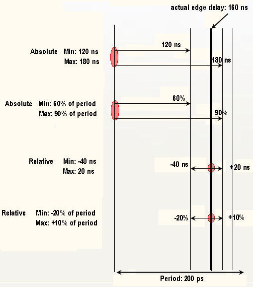

Example: Absolute and Relative Settings
The example in the figure below illustrates the four possible combinations.

As can be seen absolute settings always use the start of the period as reference point, whereas relative settings use the actual edge delay as reference point. The same reasoning for absolute/reference settings applies to levels, loads, and DPS margins.
If the edge delay chosen exceeds the distance between the edge to be varied and its neighboring edge the edge to be varied will only be shifted until it reaches the neighboring edge. Pass/fail results are determined for this interval only. The same applies for levels.